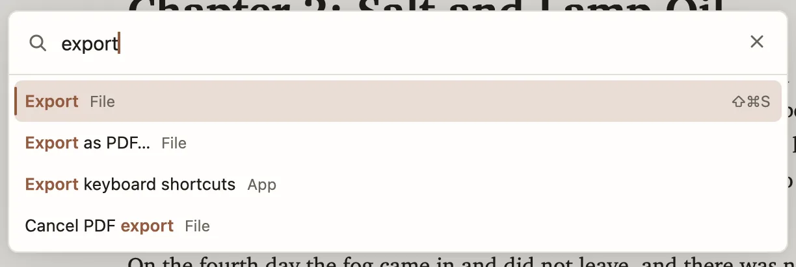
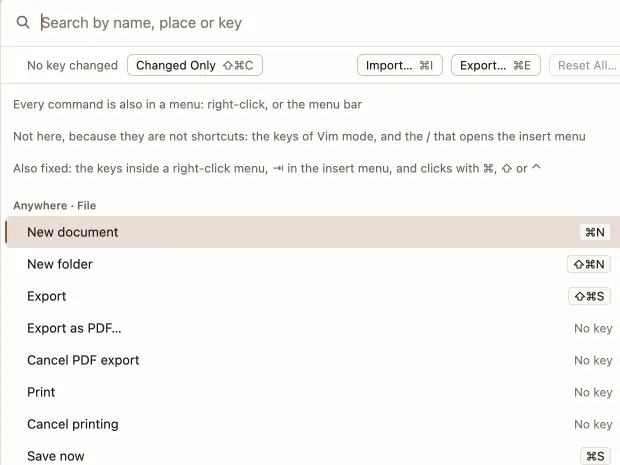
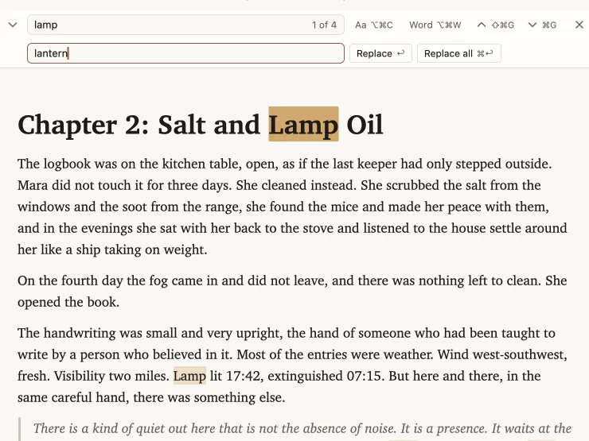
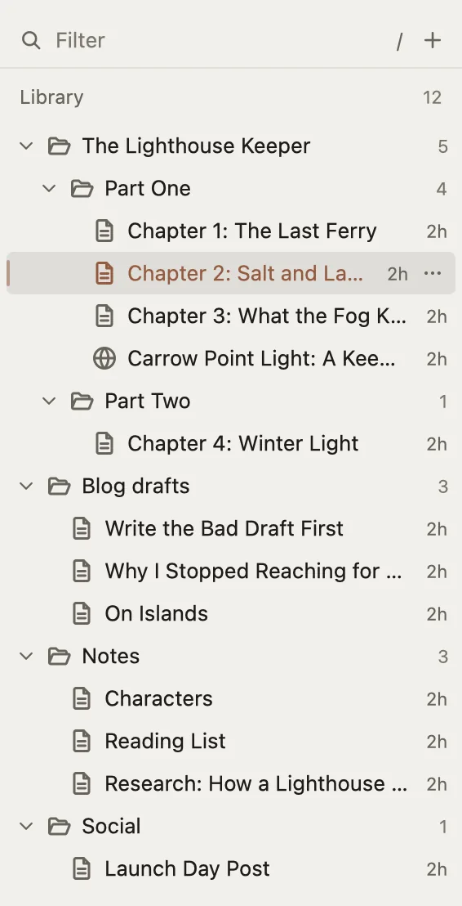
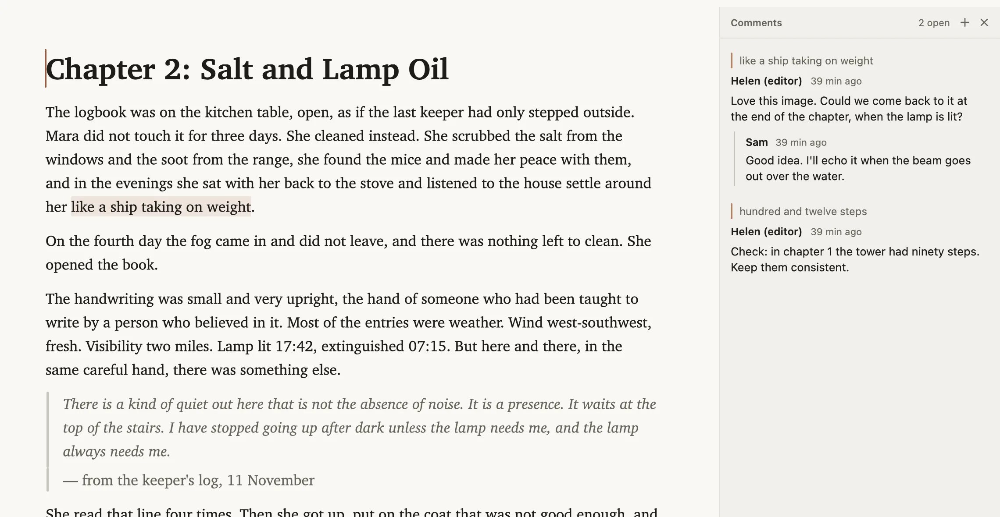
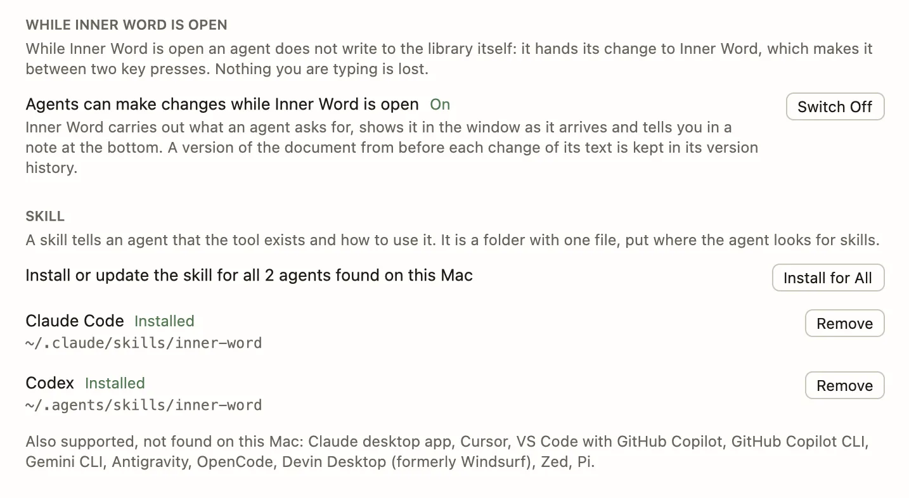
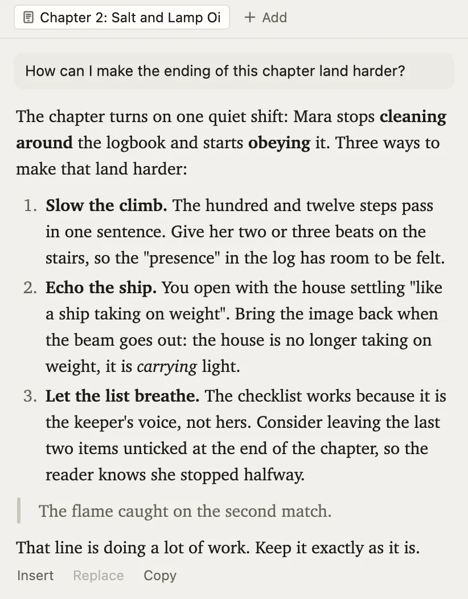

A writing app for macOS · Version
Paper, ink, and your keyboard.
Inner Word is a rich-text writing app for books, blog posts and social posts. Everything can be done from the keyboard, everything can be done with the mouse, and your library stays on your Mac.
No account, no subscription · For Apple silicon and Intel Macs · macOS 11 or later (10.15.7 on Intel)
First launch needs one approval Works with any AI agent, if you use one

What Inner Word is
Inner Word is for people who write long things. You get a single column of text in a serif made for reading, or real sheets of paper in page view, and very little else on screen. There is no ribbon and no toolbar. Formatting comes from shortcuts, Markdown-style typing, a small format bar over a mouse selection and right-click menus.
Your documents live in a library of folders on your own Mac, saved as you type, with versions you can go back to. Saved web pages and whiteboards sit beside them.
A writing surface that gets out of the way
Write in a calm column, or switch to page view Option Command P and see your text on real paper: its size, margins and page numbers, laid out the way it will print.
- A4, Letter or a custom size, portrait or landscape, with your own margins.
- Charter by default; font, size, line and paragraph spacing per document.
- Zoom from 50 % to 400 %, fit the width, fit a page, or life size. The same words stand on the same pages at every zoom.
- Two themes: Paper and Night.

Keyboard first. Mouse welcome.
Every feature can be reached and finished from the keyboard. Every feature can also be reached with the mouse alone: right-click anything, or use the native menu bar, which has every command.
- The command palette Shift Command P runs any command by name; quick open Command P jumps to any document.
- Every shortcut can be changed. The list Command Slash says when a key is taken or kept by macOS, and exports and imports your keys as a file.
- Vim mode Option Command V, with spelling keys like
]sandz=.





A library, not a pile of files
Folders and documents in a sidebar, all in one place, all searchable.
- Create, rename and move folders and documents from the keyboard or with the mouse.
- Search the whole library Shift Command F, or open a document by name Command P.
- Version history for every document: preview a version and bring it back.
- Deleted documents go to the trash first.
Your text is never lost
There is no save button because none is needed.
- Documents save as you type, and again when you switch, close or quit. Command S saves at once, for anyone who wants to be sure.
- A daily backup of the library is kept, seven days deep, with a second copy of your pictures.
- Two copies of the app never open the same library, so neither overwrites the other.

The tools of a manuscript, without the clutter
Comments for the edit, pictures in the text, your Mac’s own spelling, and export when it is ready.
- Comments. Select text, add a comment Option Command M, reply, resolve, and step through threads with Option Command right bracket and Option Command left bracket.
- Pictures. Insert, paste or drop them, resize with a corner or the keyboard, and describe each one. The GPS position is always taken out; camera and date details stay in the file.
- Spelling. Your Mac’s checker, the language found paragraph by paragraph or chosen per document.

Export and print
Export a document or a whole folder Shift Command S. A folder becomes one PDF, each document on its own paper, with page numbers running through and its whiteboards at the end. Print goes through the macOS print panel, exactly as page view shows it, at real size.
- Markdownwith a folder of its pictures
- WordDOCX, pictures inside
- PDFthe pages Print makes
- Plain textdescriptions for pictures
Works with any AI agent, if you use one
Inner Word works fully without any agent. If you use one, any agent that can run a command or speak MCP can read and edit your library, not only Claude. It goes through innerword, a command line tool and MCP server that ships inside the app.
- A version is kept before every change an agent makes to a document’s text. What an agent deletes goes to the trash.
- It works while the app is open: the change appears between two key presses, after your own typing is saved, with a note that names the agent and an Undo button.
- The Agents panel Option Command A installs the skill and shows the MCP command for each agent. Nothing is installed until you press a button.

innerword edit \
"The Lighthouse Keeper/Part One/Chapter 2: Salt and Lamp Oil" \
--old "the fog came in and did not leave" \
--new "the fog came in and sat down against the windows like a patient animal" \
--author Claude
Works with any agent that can run a command or speak MCP · Antigravity · Claude Code · the Claude desktop app · Codex · Cursor · Devin Desktop · Gemini CLI · GitHub Copilot CLI · OpenCode · Pi · VS Code with GitHub Copilot · Zed
An assistant in the app, if you want one
Separate from the agents above: an optional writing assistant inside Inner Word, in two chats. It runs on an AI agent you have installed and signed in to. Today that agent is Claude Code; support for other agents is planned. Without one, nothing of the assistant is shown.
- Quick chat Command J: ask about the selected text in a small popover at the selection. Another word, a tighter sentence, another tone.
- Side chat Command 3: a longer conversation beside the text that knows the whole document, and other documents and folders you add.
- It advises, you apply. Every answer has buttons to replace the selection, insert it or copy it, and Command Z takes it back. It never changes a document by itself.
Nothing is sent until you send a message. Messages go through your own sign-in to the agent (with Claude Code, to Anthropic) and count against your own plan.

Web pages, kept offline for good
Keep a web page in your library beside your documents: an HTML file, a folder, or a Claude artifact you saved. Everything it needs is downloaded once, when you add it. Showing it never touches the network.
- A page that cannot be kept whole is not kept at all, and Inner Word names what is missing.
- Pages have a globe in the library, and turn up in search, quick open and the trash like any document.
- Find in a page, zoom it, print it, or export it as a folder that opens offline, or as a PDF.
- Pages need macOS 12.3 or later.

Whiteboards for the plan behind the words
Draw the plot of a novel, the outline of a post or the cast of a story on a whiteboard in your library, beside the text it is for. Hand-drawn shapes, arrows, text, frames and pictures, from the real Excalidraw, built into the app and working offline.
- Saved as you draw, with versions, the trash and library search, like a document.
- Turn Mermaid text into a drawing, and keep the shapes you reuse in a shape library.
- Keyboard or mouse: the command palette has Add rectangle, Add text, Add arrow and the rest, and Excalidraw’s own keys work on the canvas.
- Export as PDF: one page the size of the drawing, with sharp lines and real text. A folder’s PDF includes its whiteboards, and Print fits the drawing to your paper.
- Whiteboards need macOS 12.3 or later.

innerword, as Excalidraw exports it.innerword board new "Plot of Part One" \
--in "The Lighthouse Keeper" --author Claude
innerword board add "Plot of Part One" \
--author Claude --content '[
{"type":"rectangle","id":"ch1","x":0,"y":0,
"label":{"text":"1 The letter"}},
{"type":"rectangle","id":"ch2","x":380,"y":0,
"label":{"text":"2 Salt and Lamp Oil"}},
{"type":"arrow","x":0,"y":0,
"start":{"id":"ch1"},"end":{"id":"ch2"},
"label":{"text":"she arrives"}}
]'Agents draw too
Ask your agent to draw the plan. It can make a whiteboard and add shapes, arrows with labels, text and pictures, or move and restyle what is there. A version is kept before every change.
If it draws while the whiteboard is open, the change appears on the canvas at once. What you changed meanwhile stays as you made it, and the note offers Undo.
Whiteboards are built on Excalidraw, under the MIT license.
The keys you will use every day
These are the defaults. Every one of them can be changed.
- Command palette
- Shift Command P
- Open a document by name
- Command P
- New document
- Command N
- Format menu
- Command Period
- Insert menu, at the start of a line
- Slash
- Zoom in, zoom out
- Command Plus Command Minus
- Context menu of what has the keyboard
- Control Return Shift F10
- Every shortcut, to look up and change
- Command Slash
Your writing stays on your Mac
No account. No sign-up. Your library is a folder on your Mac, and nothing leaves it unless you choose.
~/Library/
Documents are in library.db, pictures in images.db, both SQLite. Removing the app does not remove your documents. Back up that folder and you have a copy of everything.
Download Inner Word
For macOS. Two disk images; choose Universal if you are not sure.
On your phone? Open this page on your Mac to download.
Not sure which Mac you have? Apple menu > About This Mac: “Chip” means Apple silicon, “Processor” means Intel.
macOS 10.15.7 or later on an Intel Mac, macOS 11 or later on Apple silicon. Pages (saved web pages) and whiteboards need macOS 12.3. · All releases on GitHub
Install
- Open the disk image and drag Inner Word onto the Applications folder.
- Eject the disk image.
- Open Inner Word. The first time, macOS stops it: see the note.
Open source, under the MIT license, on GitHub
Inner Word is written in Rust, on GPUI, the UI framework made by the Zed team, with SQLite for the library. Read the code, build it yourself, report a bug or send a change.
- Rustthe whole app and its tools
- GPUInative, GPU-drawn interface
- SQLiteyour library, two files
What may come next
Plans, not promises. None of these has a date.
-
Windows and Linux
Inner Word is a Mac app today. Versions for Windows and Linux may follow.
-
Optional cloud sync and sharing
Off unless you turn it on. For people who want their library on several devices, or want to share documents with other people. A library on your Mac with no account would stay the default.
-
More agents for the assistant
The assistant runs on Claude Code today. It is built so that other agents can run it too.
Questions
Is there an account or a subscription?
No. Inner Word has no account and no subscription. The optional assistant runs on your own plan with the agent it uses: today that is Claude Code, which Anthropic charges for.
Do I need Claude, or any AI agent, to use it?
No. Inner Word works fully without any agent. Agents are optional: any agent that can run a command or speak MCP can work with your library, and Claude Code is one of many. The assistant inside the app runs on Claude Code today and appears only when it is installed and signed in; support for other agents is planned. It can be switched off in the settings.
Is the whiteboard Excalidraw?
Yes: the real Excalidraw, under the MIT license, built into the app. It runs offline and loads nothing from the network; what you draw is saved in your library like a document. Its collaboration and AI features are switched off.
Is there a version for Windows or Linux?
Not today: Inner Word is a Mac app. Versions for Windows and Linux may come later; see What may come next.
Does it sync, through iCloud or otherwise?
Not today: your library is a folder on your Mac, so back it up as you back up the rest of your Mac. Optional cloud sync and sharing, off unless you turn it on, may come later; see What may come next.
It used to be called The Writer?
Yes, until version 0.9.0. The first launch of Inner Word moves your library from the old folder to the new one and leaves a link under the old name. Quit The Writer before you open Inner Word for the first time, then move The Writer to the Trash. The Agents panel updates the skill your agents had from The Writer.
Why does macOS block it the first time?
The app is not notarised by Apple. You approve it once; here is how.